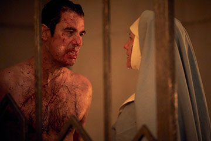

Count Dracula
The First Vampire

The First Vampire
Count Dracula is a Vampire from Romania, He is the Prince of Wallachia. Count Dracula is a vampire that has been trying for centuries to make another like him, experimenting by any means necessary, he kept multiple "failed" attempts in boxes in his castle. When Dracula drinks someone’s blood, he sees all the memories, and learns everything they can do.
In 1897, Dracula hired a lawyer, Jonathan Harker to travel to his Castle in Romania to go over the purchase of an Abbey in England. During Jonathan’s stay, Dracula was feeding on his blood to be younger, in the end Jonathan managed to escape to a convent, where he was questioned by a nun named Sister Agatha. Dracula appeared at the gates in the form of a wolf, Sister Agatha goaded him and cut her finger, and dropped blood at him, calling him a beast. Count Dracula questioned who she was and how she knew about him and his inability to set foot on property without permission. He got her name, Agatha Van Helsing, through her blood, "Blood is lives" is something he frequently says. This starts his fascination with Agatha because she knows about him and wishes to figure out why he is what he is.
Dracula ends up on a boat and feeding from the passengers and Agatha Van Helsing, Agatha causes an explosion on the boat to make it sink, Dracula gets to his coffin in time which is filled with Romanian soil. 123 years later, he is awoken, walks onto a beach to find someone who looks the exact same as Agatha, turns out she is a direct descendent of Agatha named Zoe. Zoe spent her life with the Jonathan Harker Foundation Harker Foundation (Created by Jonathan Harker’s fiancée Mina) studying Dracula’s past and following in her Great-Great Aunt Agatha's footsteps. Zoe Informs Dracula he has been asleep for 123 years.
Agatha
Nun at the Convent
Dracula Feeding off of boat passenger
Zoe whilst killing himself
Jonathan Harker
Lucy Westenra
{kind=link}
{kind=link}
{kind=link}